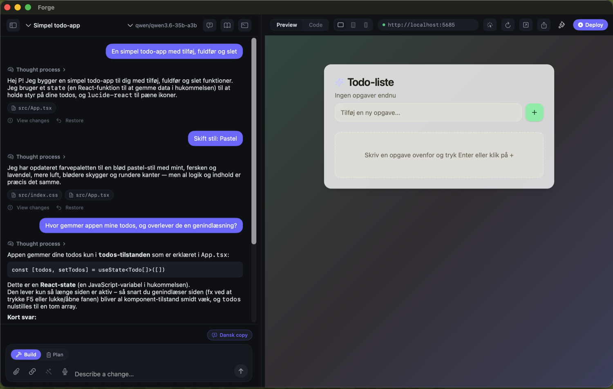
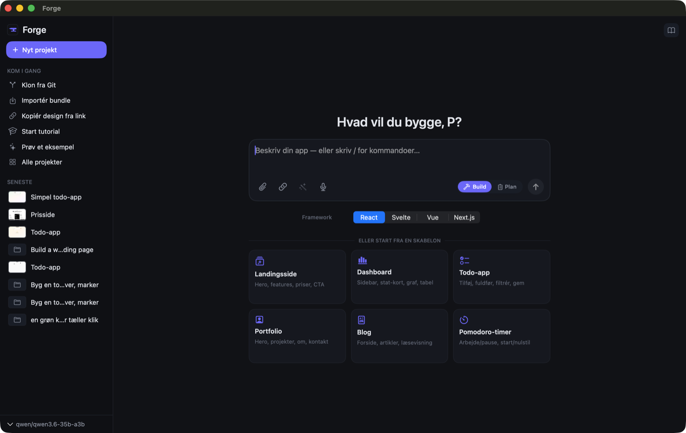
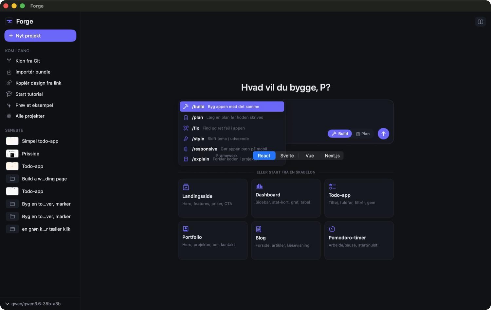
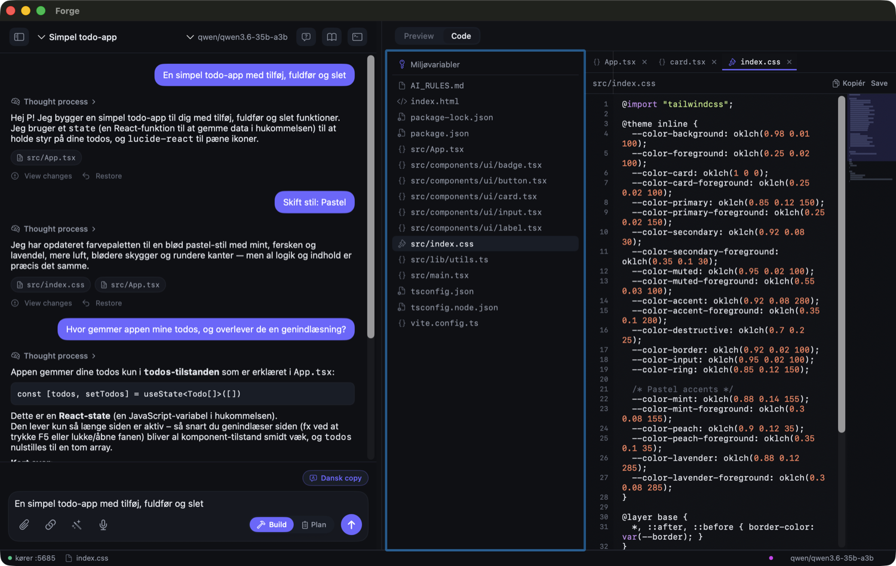
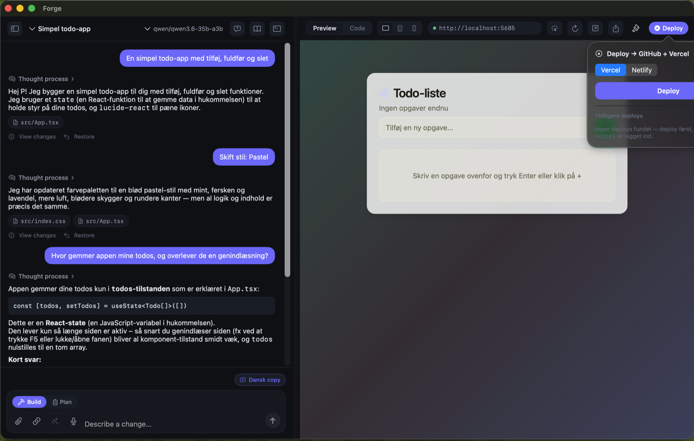
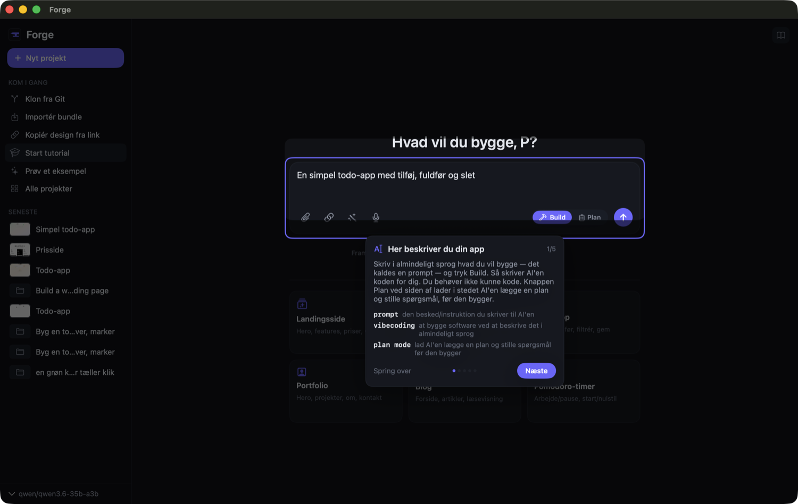

Forge is a local-first, open-source app builder for macOS — a native SwiftUI take on the Lovable / Bolt pattern. An AI agent writes a real React, Svelte, Vue or Next.js project to your disk, runs it, and shows a live preview with hot-reload. The model runs on your Mac. No cloud account required, no code leaves your machine.

The same vibe-coding loop as the cloud tools — but private, native, and yours.
Point it at Ollama or LM Studio and the whole loop — prompt → code → preview — happens on-device. Your prompts and source never leave the Mac.
Every project is a normal folder you can open in any editor, commit to git, and run with npm yourself. Forge is a front-end to the toolchain you already use.
A genuine SwiftUI app with a WKWebView preview — fast cold start, low memory, proper macOS window and menu behaviour.
Local models for free, private work — or plug in a cloud API key (OpenAI, Anthropic, Google Gemini, NVIDIA) when you want a bigger model.
From an empty prompt to a deployed app.
Type a prompt, pick a framework (React / Svelte / Vue / Next.js), or start from a template. Toggle Build vs Plan, attach a screenshot, or type / for slash commands.

Type / for a filterable menu. /build·/byg and /plan flip the mode; /fix, /style, /responsive and /explain prefill a ready-made brief.

The agent streams its edits while the preview renders against a local dev server with hot-reload. A status bar shows dev-server state, the active model, and token usage. Every turn is checkpointed — restore or diff any state.
A keyboard-navigable file tree, a syntax-highlighted editor with line numbers, open-file tabs, and a minimap. Watch files stream in live, copy any file, or open the whole project in your editor.

Deploy from the toolbar to Vercel, Netlify or GitHub Pages, plus push-to-GitHub. Deploy history is tracked per project, .env vars are pushed to the host, and you get a shareable live link back.

New to vibe-coding? A spotlight walkthrough explains each part of the UI in plain language, and learning mode surfaces one-time explainer cards at milestones with an always-open glossary.

Feature-complete through its backlog — engine, workflow and platform.
tsc + a smoke test and fixes its own errors before handing back.Requires macOS 26 on Apple Silicon, plus a model backend (the onboarding wizard helps you install one).